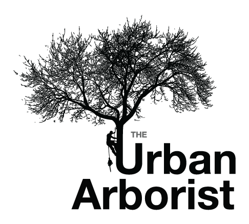
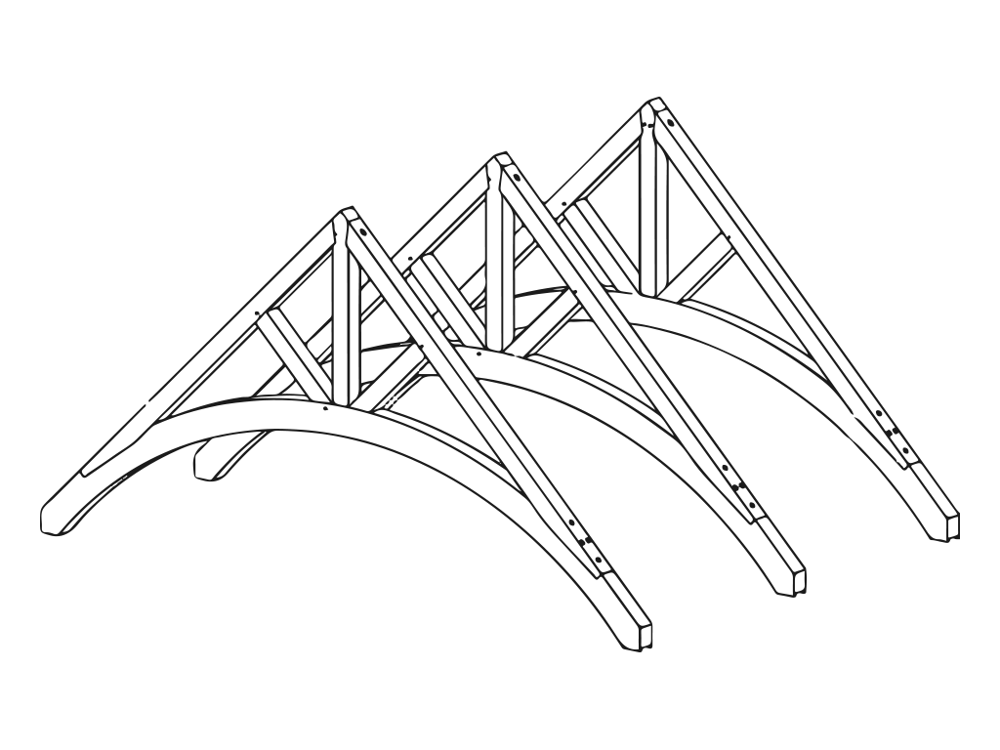

Use ↑ ↓ arrow keys to move between slides, or just scroll if that's your thing.
Hi. I'm Zeke Sikelianos, a designer, software developer, and new dad in San Francisco.
This website is my application to the inaugural session of Beaver Brook, a design and building school in the woods of upstate New York.
What is your interest in Beaver Brook School?
I come from a family of artists and craftsmen, many of whom work with wood.
Most of the work I do occupies the ephemeral space of the Internet, but
I want to work on more tactile design projects that exercise both mind and body.
My grandfather, Glafkos Sikelianos, was a boatbuilder.
Uncle Poppy became a master carpenter.
Uncle Chris, the last living elder of the Sikelianos family, builds houses in upstate New York.
Here's a treehouse he's working on.
My father, Jon Sikelianos, was a tree surgeon. This is him in Santa Barbara in the late seventies or early eighties.
My brother, Joe Sikelianos, is an arborist. He owns and operates a tree service in San Francisco.
My sister, Pouli Sikelianos, runs a sawmilling operation in Santa Barbara.
(The list goes on.)
What is something you've made?
As a kid, I built a lot of treehouses and skate ramps. This is the first of two half-pipes I designed and built.
With the help of my family, I built this adobe wall in 10 days with 600 adobe bricks at 35 lbs each, and 4 tons of dirt.
I saved this clawfoot tub for many years, until I finally found a home for it.
I helped my friends build a yurt on my property in New Mexico. Here's a shot of the rafters.
I used to work for a multidisciplinary design firm. This marquis at the entrance to an amphitheatre is the largest architectural project I've worked on to date.
Last year I helped my mother build a timberframe sauna in her backyard.
The windows were the fun part.
They said it couldn't be done, but I built a recreational
corn bed.
Which skills do you want to learn at Beaver Brook?
I want to learn skills that will help me build a comfortable home for my family.
Topics I find intriguing on the
Beaver Brook website
include
flooring,
roof framing,
window installation,
door hanging,
the hearth --
basically all of it.

What's a building you'd like to make but haven't?
First, a workshop.
Then, a home.
If civilization ended, what role would you play in the New Dawn?
I'd be a teacher. I'd help kids become independent thinkers and motivated creators.